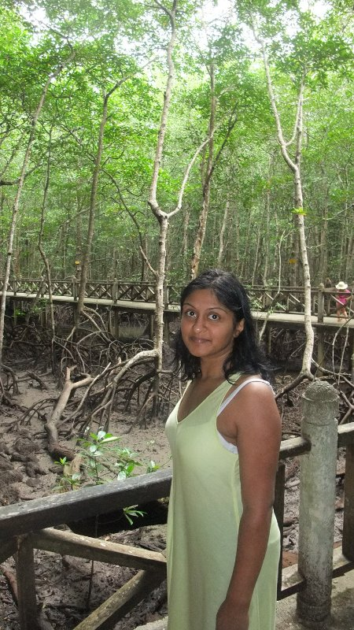
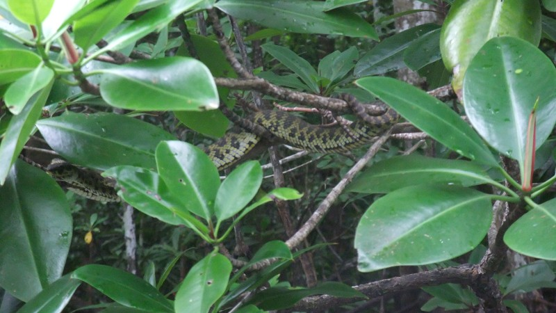

Mangrove Tour

Female Viper Snake…

This entry was posted
on Wednesday, December 2nd, 2009 at 4:50 am and is filed under Uncategorized.
You can follow any responses to this entry through the RSS 2.0 feed.
You can leave a response, or trackback from your own site.